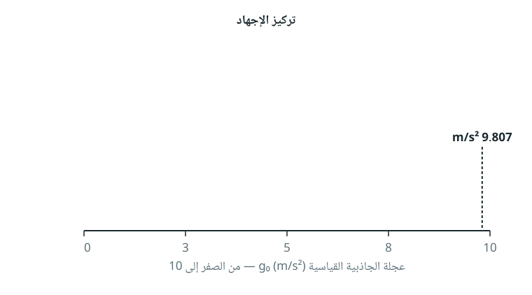

تركيز الإجهاد
Stress concentration
تركيز الإجهاد هو ارتفاع الإجهاد الموضعي عند تغيّر مفاجئ في المقطع أو وجود ثقب أو حزّ، ويُقاس بمعامل K_t الذي يساوي نسبة الإجهاد الأقصى إلى الإجهاد الاسمي.
عندما يتغير مقطع جزء ميكانيكي فجأة — ثقب أو حزّ أو تغيّر سماكة — تنحرف خطوط الإجهاد وتتكدس عند التغيير، فيصير الإجهاد الموضعي أعلى من الإجهاد الاسمي المحسوب من القوة والمساحة. ويُقاس ذلك بمعامل تركيز الإجهاد K_t = σ_max/σ_nom. فثقب دائري في صفيحة واسعة تحت شدّ أحادي المحور له K_t = 3.0 بالضبط، أي أن الإجهاد عند حافة الثقب ثلاثة أضعاف الاسمي. مثال: صفيحة عرضها 100 mm وسماكتها 5 mm فيها ثقب قطره 20 mm، تحت قوة 50 kN: الإجهاد الاسمي على المقطع الصافي 50 000/(0.080 × 0.005) = 125 MPa، والإجهاد الأقصى عند الثقب 3 × 125 = 375 MPa.
كيف تعمل الظاهرة؟
خطوط الإجهاد في جزء محمّل تسلك مسارات تشبه مسارات جريان سائل في أنبوب. وعندما يعترضها ثقب، تنحرف حوله وتتكدس في المقطع الضيق المتبقي، تماماً كما تتسارع المياه حول صخرة. ونتيجة هذا التكدس أن الإجهاد عند حافة الثقب يتجاوز المتوسط. والقيمة 3 للثقب الدائري ليست اعتباطية: هي نتيجة حل كيرش التحليلي لمشكلة الصفيحة اللانهائية، وتأتي من جمع الإجهاد الاسمي مع إجهادات موضعية ناتجة عن انحراف المسار. وكلما كان التغيّر في المقطع أكثر حدة — حزّ ضيق الجذر — كان التكدس أشدّ، ولهذا تُصمَّم الحزوز في الآلات بنصف قطر جذر كبير.
العلاقة بالأرقام
K_t = σ_max/σ_nom. وللثقب في صفيحة محدودة العرض: K_t ≈ 3 − 3.13(d/W) + 3.66(d/W)² − 1.53(d/W)³. وللحزّ: K_t ≈ 1 + 2√(a/r). مثال عددي: d/W = 0.2 → K_t = 3 − 0.626 + 0.1464 − 0.0122 = 2.508. وσ_nom = F/((W−d)·t) = 50 000/(0.080 × 0.005) = 125 MPa → σ_max = 313.5 MPa. ولو كان الجذر أنعم (r أكبر) لقلّ K_t، ولو كان حزّاً حاداً (r → 0) لاقترب K_t من اللانهاية.
مفاهيم متقاربة
يُفرَّق بين التركيز الساكن والكلالي: K_t يصف إجهاداً ساكناً، وفي الكلال تُستعمل عوامل تصحيح إضافية لأن التركيز يخفف باللدونة الموضعية. ويُفرَّق بين K_t النظري وK_f الفعّال: K_f = 1 + q(K_t − 1)، حيث q حساسية الحزّ التي تقلّ في المواد المطيلة وتقترب من الواحد في الهشّة. ويُفرَّق بين تركيز الإجهاد وتركيز الانفعال K_ε: في اللدونة يختلفان، ويُستعمل بدلاً منهما تركيز الانفعال في تحليل الكلال منخفض الدورات. وأخيراً K_t ليس خاصية مادية بل خاصية هندسية، فهو نفسه لأي مادة في الشكل نفسه.
حدود التطبيق
قيم K_t المحسوبة من نظرية المرونة تفترض مادة متجانسة مرنة خطية، وتفشل حين تخضع المادة لدونة موضعية كبيرة عند الحزّ، حيث يخفف التركيز فعلياً. ولا تصح في المواد المركّبة أو الملحومة حيث تظهر تركيزات إضافية من البنية المجهرية والعيوب. ولا تصح في التحميل المتكرر بلا تصحيح، لأن الكلال يبدأ من الحزّ عند إجهاد أقل بكثير من الخضوع. وأخيراً لا تُجمع قيم K_t لعدة حزوز جمعاً خطياً؛ التداخل بينها غير خطي ويحتاج تحليلاً عددياً.

| الكمية | القيمة | المصدر |
|---|---|---|
| معامل تركيز الإجهاد لثقب دائري في صفيحة لا نهائية | 3.0 بلا وحدة | [2] |
| الإجهاد الأقصى عند ثقب d/W=0.2 تحت 125 MPa اسمي | 313.5 MPa | [2] |
المصادر
- 1 CODATA Value: standard acceleration of gravity — NIST — CODATA 2022 recommended values (2024). physics.nist.gov/cgi-bin/cuu/Value?gn · اطُّلع عليه 2026-11-21
- 2 The International System of Units (SI), 9th edition (2019) — BIPM — Bureau International des Poids et Mesures (2019). www.bipm.org/en/publications/si-brochure · اطُّلع عليه 2026-11-21
- 3 CODATA Value: molar gas constant — NIST — CODATA 2022 recommended values (2024). physics.nist.gov/cgi-bin/cuu/Value?r · اطُّلع عليه 2026-11-21
استشهد بهذا المصطلح
الصيغتان مبنيتان من بيانات الصفحة نفسها: العنوان والتاريخ ورابط النسخة المنشورة.
تركيز الإجهاد — Stress concentration. (2026). ديوان المعرفة — انفراد. https://infiradev.com/diwan/terms/term-stress-concentration.html
@misc{term-stress-concentration2026,
title = {تركيز الإجهاد},
titleaddon = {Stress concentration},
howpublished = {{ديوان المعرفة — انفراد} — مرجع علمي عربي},
year = {2026},
url = {https://infiradev.com/diwan/terms/term-stress-concentration.html},
urldate = {2026-11-26},
note = {مراجعة علمية: hermes (مراجعة معتمدة 2026-11-26)}
}
راجعه: hermes (مراجعة معتمدة 2026-11-26) · 2026-11-26 · آخر تحديث 2026-11-21